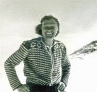
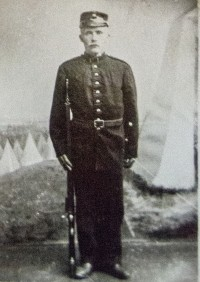
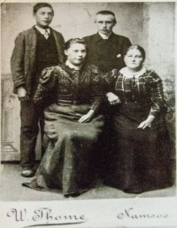
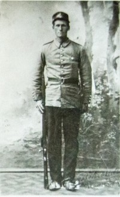
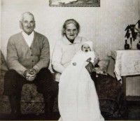

Anton Mikal Baardsen
M, #26, f. 20 januar 1833, d. 30 desember 1883
Foreldre
Biografi
Anton Mikal Baardsen ble født den 20 januar 1833 Årfor; Foldereid, Nærøy, Nord-Trøndelag. Han giftet seg med
Ingeborg Anna Isakdatter Ørholm datter av
Isak Eliassen Urdshals og
Beret Maria Nilsdatter Rokken, den 12 april 1864. Anton Mikal Baardsen døde av spedalskhet den 30 desember 1883 Finnehaugen, Finne; Kolvereid, Nærøy, Nord-Trøndelag. Han ble gravlagt den 7 januar 1884 Kolvereid kirkegård, Nærøy, Nord-Trøndelag.
Anton Mikal Baardsen var kårmand.
| Sist redigert |
15 juli 2022 00:04:01 |
| Slektskap | 5-menning 4 ganger forskjøvet til Håkon Wahl |
Reguline Mathine Andreasdatter Setervik
K, #27, f. 4 mai 1830, d. 8 juni 1921
Foreldre
Biografi
Reguline Mathine Andreasdatter Setervik ble født den 4 mai 1830 Geisnes; Kolvereid, Nærøy, Nord-Trøndelag. Hun giftet seg med
Ole Olaussen Hagan sønn av
Olaus Ottesen Gran og
Ingebor Ingebrigtsdatter Lund, den 14 juni 1860. Reguline Mathine Andreasdatter Setervik døde den 8 juni 1921 Nærøy, Nord-Trøndelag. Hun ble gravlagt Kolvereid kirkegård, Nærøy, Nord-Trøndelag.
Reguline Mathine Andreasdatter Setervik was also known as Reguline Mathine Hagan. Hun was also known as Martine Setervik.
| Sist redigert |
24 mars 2012 00:00:00 |
Borghild Eggan
K, #28, f. 6 september 1899, d. 23 desember 1980
Foreldre

Borghild Rian ca 1950
Biografi
Borghild Eggan ble født den 6 september 1899 Trondheim, Sør-Trøndelag. Hun giftet seg med
Tjalve Nordløw Rian sønn av
Ingolf Andor Rian og
Ina Nordløv, den 12 april 1924 Nidarosdomen. Borghild Eggan døde den 23 desember 1980 Trondheim. Hun ble gravlagt den 26 mai 1981 Havstein kirkegård, Byåsen, Trondheim.
Borghild Eggan was also known as Borghild Rian. Hun ble døpt den 24 september 1899 Bakke kirke. Hun ble konfirmert den 7 desember 1913 Bakke kirke. Hun var kontordame i 1918. Hun bodde i 1918 på/i Nedre Bakklandet 10, Trondheim, Sør-Trøndelag, sammen med sine foreldre. Hun ble bisatt den 29 desember 1980 Havstein kirke.
| Sist redigert |
18 august 2024 22:56:18 |
| Slektskap | Tante til Lovise Julie Eggan |
Karl Eggan
M, #29, f. 14 september 1895, d. 5 november 1916
Foreldre
Biografi
Karl Eggan ble født den 14 september 1895 Voldsminde, Trondheim, Sør-Trøndelag. Han døde ved drukning i Vintervannet den 5 november 1916 på/i Trondheim, Sør-Trøndelag. Han ble gravlagt den 10 november 1916 Lademoen kirke, Trondheim, Sør-Trøndelag.
Karl Eggan ble døpt den 3 november 1895 Bakklandet kirke, Trondheim, Sør-Trøndelag. Han var snekkerlærling i 1914. Karl bodde Nedre Bakklandet 10, Trondheim, Sør-Trøndelag, i 1914. Hos sine foreldre.
Fra Adresseavisen mandag 6. november 1916:
Drukningsulykke paa Vintervandet.
Igaar ved middagstider hændte der en sørgelig ulykke paa Vintervandet. Nogen gutter rendte paa skøiter paa den skrøbelige is paa vandet. Den ene av dem, Karl Eggan, gik igjennem isen og greiet ikke at holde sig oppe til hjælpen kom. Først efter flere timers sokning lykkedes det at finde den druknede.
| Sist redigert |
5 juli 2025 18:34:32 |
| Slektskap | Onkel til Lovise Julie Eggan |
Harald Eggan
M, #30, f. 14 november 1904, d. 1917
Foreldre
Biografi
Harald Eggan ble født den 14 november 1904 Trondheim, Sør-Trøndelag. Han døde i 1917 Trondheim, Sør-Trøndelag. Harald druknet ved en ulykke i Nidelven ved Gamle Bybro. Han ble gravlagt den 5 mai 1917 Lademoen kirke, Trondheim, Sør-Trøndelag.
Harald Eggan ble døpt den 18 desember 1904 Bakke kirke, Trondheim, Sør-Trøndelag.
| Sist redigert |
16 juli 2022 18:03:39 |
| Slektskap | Onkel til Lovise Julie Eggan |
Erling Eggan
M, #31, f. 15 november 1902, d. 18 august 1986
Foreldre
Biografi
Erling Eggan ble født den 15 november 1902 Bakklandet, Trondheim, Sør-Trøndelag. Han giftet seg med
Hjørdis Paulsen på/i USA. De fikk ingen barn.
Han døde av hjertesvikt den 18 august 1986 Rypeveien, Kattem, Heimdal, Trondheim, Sør-Trøndelag.
Erling Eggan ble døpt den 28 desember 1902 Bakke kirke, Trondheim, Sør-Trøndelag. Han ble konfirmert den 2 desember 1917 Bakke kirke, Trondheim, Sør-Trøndelag. Han utvandret til Minneapolis, Hennepin County, Minnesota, USA, den 15 april 1926. Erling - maskinsnekker - reiste fra Trondheim med "Stavangerfjord" til New York. Reisen var betalt kontant.
Ved ankomst Ellis Island, New York den 20 april er det registrert at Erling hadde 25 $ i kontanter. Videre at han skulle til slektningen Aksel Schow, 4652 Zenith Ave. Minneapolis. Kontakten i Norge var faren Kristian. Han og
Hjørdis Paulsen hadde vært på Norgesbesøk og dro tilbake med "Stavangerfjord" fra Oslo 2.3 og ankom New York 12.3 1937. Deres kontakt i Norge var Erlings søster Borgild Rian, "Toreli", Byåsen, Trondheim. De hadde tilsammen 210 $ i kontanter. Erlings stilling var da pakker. Deres hjemmeadresse var 3010-17. Str., Racine, Racine County, Wisconsin. Han
Erling ble amerikansk statsborger i 1939. Han bodde på/i Egan Road, Glidden, Ashland County, Wisconsin, USA. Erling var tømrer og snekker. Han og
Hjørdis Paulsen drev et sted ved Gordon Lake, Glidden. Der leide de ut "cabins" og forsørget gjestene. Her var det både fiske- og jaktmuligheter. Stedet lå øde til og når vinteren var riktig hard, kunne de være isolert fra omverden i flere uker. Flyfoto av stedet har påskriften: Gordon Lake is 3 miles north of Glidden, Wisc. at Junction of Highway 13 & 77. Best of vacationing area with hunting og fishing. Home of the World's largest Blac Bear.
Etter at Erling og Hjørdis ble pensjonert, solgte de bedriften og flyttet tilbake til Norge i juli 1968. Erling og
Hjørdis bodde Rypeveien, Kattem, Heimdal, Trondheim, Sør-Trøndelag, etter 1980.
Erling drev med idrett i ungdommen, og særlig skihopping. I Wisconsin ble han benyttet til å opptre med skihopping, i alt fra ordentlige skibakker til improviserte anlegg på låvebruer. Dette holdt han på med til han var bortimot 50 år.
Han var kortvokst og slank, og lett på foten så lenge han levde. Hjørdis var på sine eldre dager forsiktig med hvor hun trådde. Erling hadde liten ank til å vente, så da var han rundt over alt og informerte seg om forholdene på stedet.
Erling var svært vennlig og utadvendt. Likevel opplevde han tilbakekomsten til hjemlandet som noe skuffende. Det Trondheim han kjente var jo for lengst borte, og jevnaldrende var sikkert noe gammelmodige for denne spreke mannen. Han ble bisatt den 25 august 1986 Havstein kirke, Byåsen, Trondheim, Sør-Trøndelag. Det var urneseremoni den 15 juni 1987 Havstein kirke, Byåsen, Trondheim, Sør-Trøndelag.
| Sist redigert |
28 juni 2026 23:06:47 |
| Slektskap | Onkel til Lovise Julie Eggan |
Hjørdis Paulsen
K, #32, f. 23 juni 1905, d. 21 september 1990
Foreldre
Biografi
Hjørdis Paulsen ble født den 23 juni 1905 Oslo. Hun giftet seg med
Erling Eggan på/i USA. De fikk ingen barn.
Hun døde av kreft i magen den 21 september 1990 Regionsykehuset, Trondheim, Sør-Trøndelag. Urne ble satt ned den 3 oktober 1990 på/i Havstein kirke, Byåsen, Trondheim, Sør-Trøndelag.
Hjørdis Paulsen was also known as Eggan. Hun ble døpt den 13 august 1905 på/i Grønland prestegjeld, Oslo. Tidspunkt er overensstemmende med inskripsjon på to sølvskjeer som Lovise fikk etter Hjørdis. Hun utvandret til Wisconsin, USA, den 13 april 1906 Hun reiste sammen med foreldrene fra Oslo med m/s "Montebello." Hun og
Erling Eggan hadde vært på Norgesbesøk og dro tilbake med "Stavangerfjord" fra Oslo 2.3 og ankom New York 12.3 1937. Deres kontakt i Norge var Erlings søster Borgild Rian, "Toreli", Byåsen, Trondheim. De hadde tilsammen 210 $ i kontanter. Erlings stilling var da pakker. Deres hjemmeadresse var 3010-17. Str., Racine, Racine County, Wisconsin. Hun og
Erling bodde Egan Road, Glidden, Ashland County, Wisconsin, USA. Hun og
Erling Eggan drev et sted ved Gordon Lake, Glidden. Der leide de ut "cabins" og forsørget gjestene. Her var det både fiske- og jaktmuligheter. Stedet lå øde til og når vinteren var riktig hard, kunne de være isolert fra omverden i flere uker. Flyfoto av stedet har påskriften: Gordon Lake is 3 miles north of Glidden, Wisc. at Junction of Highway 13 & 77. Best of vacationing area with hunting og fishing. Home of the World's largest Blac Bear.
Hun og
Erling Eggan.
Etter at Erling og Hjørdis ble pensjonert, solgte de bedriften og flyttet tilbake til Norge i juli 1968. Hun og
Erling bodde Rypeveien, Kattem, Heimdal, Trondheim, Sør-Trøndelag, etter 1980.
Hjørdis vil bli husket for sitt vennlige vesen. Hos henne ble det servert et utall av forskjellige hjemmebakte kaker. Hun hadde håndarbeid som hobby og broderte mye. Hjørdis korresponderte med svært mange, og holdt kontakt gjennom brev og kort så lenge hun levde. Hun ble bisatt den 26 september 1990 Tilfredshet kapell, Øya; Elgeseter, Trondheim, Sør-Trøndelag. Etter Hjørdis har Lovise (brordatter av Erling) en fint siselert sølvøse som er datert 13.4.06. og med inskripsjonen B & E.P. Dette er vel en gave til Hjørdis sine foreldre (Bertha og Einar) da de 23 år gamle med sin enda ikke 10 måneder gamle datter dro til Amerika.
| Sist redigert |
28 juni 2026 23:07:33 |
Edvard Pedersen Lien
M, #33, f. 27 februar 1877, d. 4 september 1950
Foreldre

Edvard Lien militær
Biografi
Edvard Pedersen Lien ble døpt den 27 april 1877 Bjugn kirke, Bjugn, Sør-Trøndelag. Han var sagbrugsarbeider Vemundvik, Nord-Trøndelag, i 1900. Edvard og
Olga bodde Bergum 6/3, Vemundvik, Namsos, Nord-Trøndelag. Hos hennes foreldre. Han eide Lodoviken vestre 3/38, Hammersøen, Vemundvik, Nord-Trøndelag, - fra tidlig på 1900-tallet til sist på 1940-tallet.
Edvard og
Julie bodde Spjøtneset, Vemundvik, Namsos, Nord-Trøndelag, etter 1940. Bodde her fra slutten på 1940-tallet frem til sin død.
| Sist redigert |
16 august 2024 21:44:07 |
| Slektskap | Bestefar til Lovise Julie Eggan |
Julie Augusta Aaneng
K, #34, f. 25 mars 1889, d. 17 november 1975
Foreldre
Biografi
Julie Augusta Aaneng was also known as Julie Augusta Lien. Hun og
Edvard bodde Spjøtneset, Vemundvik, Namsos, Nord-Trøndelag, etter 1940.
| Sist redigert |
13 november 2024 11:36:39 |
| Slektskap | Bestemor til Lovise Julie Eggan |
Osvald Neumann Aaneng
M, #35, f. 29 september 1910, d. 29 november 1997
Foreldre
Familie: Asbjørg Gunhilde Foss (f. 9 oktober 1902, d. 28 mars 1999)
| Datter | Grethe Aaneng (f. 12 august 1938) |
Biografi
Osvald Neumann Aaneng ble født u.e. den 29 september 1910 Ånenget, Vemundvik, Nord-Trøndelag. Han giftet seg med
Asbjørg Gunhilde Foss datter av
Nils Magnus Foss og
Karen Johanne Andreasdatter, den 11 mai 1937 Vemundvik kirke, Namsos, Nord-Trøndelag.
Osvald Neumann Aaneng døde den 29 november 1997 Namsos, Nord-Trøndelag. Han ble gravlagt den 5 desember 1997 Vemundvik kirke, Namsos, Nord-Trøndelag.
Osvald Neumann Aaneng klipte snora da veien til Botnan offisielt ble åpna den 17de desember 1980. På 30-tallet ble Ganesvika (på gnr 3, Hammersøen) forsøkt lagt ut som nydyrkingsområde gjennom NY Jord-programmet. I den anledning bygde Osval bolighus på eiendommen. Han hadde blitt tildelt nydyrkingsareal her og startet med dette. Imidlertid fikk Osvald problemer med å finansiere tiltaket og derved måtte han og familien trekke seg. Han var skogsarbeider, medlem av skolestyret og kommunestyret. Han eide i 1942 Stavmoen 3/62, Vemundvik, Namsos, Nord-Trøndelag.
Han kom inn i herredsstyret i Vemundvik første gang i 1948, og var med sammenhengende fra 1959 til årsskiftet 1975/76 da han nektet å ta gjenvalg. Da hadde han over 20 år bak seg som kommunestyremedlem og ble tidelt hedersmerke fra Norske kommuners Sentralforbund. Han var ildsjel og tillitsvalgt fra 1954 til 1991, derav 14 år som formann i Botnan skytterlag. Han og Ketil Olsen m.fl. var de siste som drev fløting i Sagelva. Han og
Asbjørg Gunhilde Foss - Fra avisa 12.5:
GIFT I 60 ÅR
Asbjørg Foss Aaneng og Osvald Aaneng feiret diamantbryllup i går. 11. mai 1937 sto bryllupet i Vemundvik kirke.
De to har bodd hele sitt liv i Botnan inntil de måtte flytte inn til byen. Han til sykeheimen og hun til pensjonistsenteret i Namsos.
Småbruket Stavmoen i Botnan var hjemmet deres i mange år. Der har de levd i pakt med naturen og med dyra sine rundt seg. Osvald Aaneng var skogsarbeider fra han var 14 år, og var den siste som drev skogen med hest i Botnan. Han var også med på vegarbeid de siste årene han var i arbeid.
Asbjørg Foss Aaneng var heime på bruket der det har vært både ku og hest. Mens mannen var ute i skogen hele uka, hadde hun alene ansvaret for dyra. Etter hvert ble kua byttet ut med sau, Sauene hadde de frem til midten av 80-tallet.
I dag er Asbjørg 94 år og Osvald 86 år, og de bor på hver sin plass.Det er nok slitsomt å skilles ad slik på sine gamle dager.
Asbjørg Foss Aaneng ønsker seg en tur tilbake til Stavmoen i sommer.
Osvald Aaneng har et langt liv i politikken å se tilbake på. Mens Vemundvik fremdeles var egen kommune var han representant i kommunestyret for Arbeiderpartiet i minst to perioder. Etter sammenslåing satt han tre perioder i Namsos kommunestyre. Den siste perioden han satt var datteren Grethes første periode i kommunestyret. den 11 mai 1997. Han
Minneord i avisa fra Morten Nordmeland:
OSVALD AANENG TIL MINNE
Osval Aaneng er død, 87 år gammel. Ved hans bortgang har arbeiderbevegelsen og Arbeiderpartiet mistet en av sine aller eldste hedersmenn, et tre i storskogen er borte, det tynnes i veteranenes rekker.
Osvald Aanengs arbeidsdager var knyttet til skogen i hele hans liv, som skogsarbeider, tømmerkjører og med skogskjøtsel. Hans rike var Botnan. Han var sterkt knyttet til folket og bygdemiljøet, et naturmenneske som opplevde både gleden ved friluftsliv og beinhardt slit for det daglige brød i skogene og fjellområdene som omkranset Botnan, de nordligste grendene i gamle Vemundvik og Salen.
Osval Aaneng er født i Ånenget ut mot Norsunda, som seksåring kom han til Loddovika i Botnan, og høsten det året begynte han på 10 ukers vinterskole. Det var arbeid som var det viktigste. Allerede vel 14 år gammel var han i fullt arbeid i tømmerskogen. I 1937 giftet han seg med Asbjørg Foss og de flyttet til Stavmoen, som ble deres heimplass resten av livet.
Han ble tidlig en merkesmann i arbeiderbevegelsen. I 1930-årene var han aktiv i Botnan Arbeiderlag og Botnan AUL. Disse to lagene arbeidet meget godt i årene fram mot krigsutbruddet, og de betydde svært mye både for gammel og ung i Botnan.
Osval Aaneng ble valgt inn i Vemundvik kommunestyre i 1945. Han ble straks dynget ned med kommunale verv og oppgaver. En tid hadde han 11 verv i komunepolitikken. Han ble valgt inn i det første kommunestyre for storkommunen Namsos i 1964 og var kommunestyrerepresentant fram til 1975, da han nektet gjenvalg. Det var vegsaker og samferdselspolitikk, bygdeutvikling og saker knyttet til skog og natur som var det viktigste for Osvald Aaneng. Han var en utrettelig talsmann for utkantene i kommunen, og for småkårsfolket både i by og land. Hans arene for politisk arbeid omfattet ikke bare folkevalgte organer i kommunen, men i høy grad årsmøtene i Namdal Arbeiderparti, hvor han i mange år var en markert deltaker i politiske debatter.
Ved siden av friluftsliv var skyttersaken mans store hobby. Han var aktiv skytter i 30 år.
En arbeidets adelsmann og samfunnsbygger er borte. Mange med oss vil takke ham for hans innsats i sin livsgjerning.
| Sist redigert |
28 juni 2026 18:22:22 |
| Slektskap | Onkel til Lovise Julie Eggan |
Olga Baroline Johnsdatter Bergum
K, #36, f. 4 juni 1878, d. 21 november 1909
Foreldre

Kristian Hestvik-Edvard Lien-Olga Bergum-Helga Lien
Biografi
Olga Baroline Johnsdatter Bergum was also known as Olga Baroline Lien. Hun ble døpt den 28 juli 1878 Vemundvik kirke, Namsos, Nord-Trøndelag. Hun og
Edvard bodde Bergum 6/3, Vemundvik, Namsos, Nord-Trøndelag.
| Sist redigert |
16 august 2024 21:43:49 |
Sverre Joakim Edvardsen Lien
M, #37, f. 2 april 1901, d. 19 oktober 1970
Foreldre
Biografi
Sverre Joakim Edvardsen Lien ble født den 2 april 1901 Vemundvik, Namsos, Nord-Trøndelag. Han giftet seg med
Olga Norense Aaneng datter av
Nikolai Karlsen og
Alette Elise Lorentsdatter. Sverre Joakim Edvardsen Lien døde den 19 oktober 1970 Vemundvik, Namsos, Nord-Trøndelag. Han ble gravlagt den 27 oktober 1970 Vemundvik kirke, Namsos, Nord-Trøndelag.
Sverre Joakim Edvardsen Lien var forpakter av eiendommen som fra 1921 var eid av Namdal Skogselskap Spjøtnes 1/1-4, Vemundvik, Namsos, Nord-Trøndelag. Sverre bodde Raubergvika 3/31, Vemundvik, Namsos, Nord-Trøndelag.
| Sist redigert |
16 august 2024 21:53:49 |
| Slektskap | Onkel til Lovise Julie Eggan |
Eldbjørg Oskara Edvardsdatter Lien
K, #38, f. 5 mai 1905, d. 10 juli 1980
Foreldre
Biografi
Eldbjørg Oskara Edvardsdatter Lien ble født den 5 mai 1905 Vemundvik, Namsos, Nord-Trøndelag. Hun giftet seg med
Kåre Petersen sønn av
Rasmus Kristian Petersen og
Ingeborg Svendsen Buseth, den 31 desember 1934 Ilen kirke, Trondheim, Sør-Trøndelag. Forlovere var Hans Kristian Ophaug og brudens søster Ester Judit Lien. Eldbjørg Oskara Edvardsdatter Lien døde den 10 juli 1980 Namdalseid, Nord-Trøndelag. Hun ble gravlagt Namdalseid kirke, Namdalseid, Nord-Trøndelag.
Eldbjørg Oskara Edvardsdatter Lien was also known as Bjørg Lien. Hun was also known as Eldbjørg Oskara Petersen. Hun adopterte sønnen
Leif.
| Sist redigert |
16 august 2024 21:56:59 |
| Slektskap | Tante til Lovise Julie Eggan |
Kåre Petersen
M, #39, f. 8 april 1912, d. mai 1979
Foreldre
Biografi
Kåre Petersen ble født den 8 april 1912 Trondheim, Sør-Trøndelag. Han giftet seg med
Eldbjørg Oskara Edvardsdatter Lien datter av
Edvard Pedersen Lien og
Olga Baroline Johnsdatter Bergum, den 31 desember 1934 Ilen kirke, Trondheim, Sør-Trøndelag. Forlovere var Hans Kristian Ophaug og brudens søster Ester Judit Lien. Kåre Petersen døde i mai 1979 Trondheim, Sør-Trøndelag. Han ble gravlagt den 1 juni 1979 Stavne kirkegård, Trondheim, Sør-Trøndelag.
Kåre Petersen adopterte sønnen
Leif.
| Sist redigert |
16 august 2024 21:55:24 |
Asbjørg Gunhilde Foss
K, #40, f. 9 oktober 1902, d. 28 mars 1999
Foreldre
Familie: Osvald Neumann Aaneng (f. 29 september 1910, d. 29 november 1997)
| Datter | Grethe Aaneng (f. 12 august 1938) |
Biografi
Asbjørg Gunhilde Foss ble født den 9 oktober 1902 Nord-Trøndelag. Hun giftet seg med
Osvald Neumann Aaneng sønn av
Karl Ludvig Olsen Rønningen og
Julie Augusta Aaneng, den 11 mai 1937 Vemundvik kirke, Namsos, Nord-Trøndelag.
Asbjørg Gunhilde Foss døde den 28 mars 1999 Namsos, Nord-Trøndelag. Hun ble gravlagt den 31 mars 1999 Vemundvik kirke, Namsos, Nord-Trøndelag.
Asbjørg Gunhilde Foss was also known as Asbjørg Gunhilde Aaneng. Hun og
Osvald Neumann Aaneng - Fra avisa 12.5:
GIFT I 60 ÅR
Asbjørg Foss Aaneng og Osvald Aaneng feiret diamantbryllup i går. 11. mai 1937 sto bryllupet i Vemundvik kirke.
De to har bodd hele sitt liv i Botnan inntil de måtte flytte inn til byen. Han til sykeheimen og hun til pensjonistsenteret i Namsos.
Småbruket Stavmoen i Botnan var hjemmet deres i mange år. Der har de levd i pakt med naturen og med dyra sine rundt seg. Osvald Aaneng var skogsarbeider fra han var 14 år, og var den siste som drev skogen med hest i Botnan. Han var også med på vegarbeid de siste årene han var i arbeid.
Asbjørg Foss Aaneng var heime på bruket der det har vært både ku og hest. Mens mannen var ute i skogen hele uka, hadde hun alene ansvaret for dyra. Etter hvert ble kua byttet ut med sau, Sauene hadde de frem til midten av 80-tallet.
I dag er Asbjørg 94 år og Osvald 86 år, og de bor på hver sin plass.Det er nok slitsomt å skilles ad slik på sine gamle dager.
Asbjørg Foss Aaneng ønsker seg en tur tilbake til Stavmoen i sommer.
Osvald Aaneng har et langt liv i politikken å se tilbake på. Mens Vemundvik fremdeles var egen kommune var han representant i kommunestyret for Arbeiderpartiet i minst to perioder. Etter sammenslåing satt han tre perioder i Namsos kommunestyre. Den siste perioden han satt var datteren Grethes første periode i kommunestyret. den 11 mai 1997.
| Sist redigert |
1 august 2023 12:13:33 |
Nikolai Karlsen
M, #42, f. 26 juni 1856, d. 16 oktober 1939
Foreldre
Biografi
Nikolai Karlsen ble født den 26 juni 1856 Skaudalen, Skauda, Rissa, Sør-Trøndelag. Han giftet seg med
Alette Elise Lorentsdatter datter av
Lorents Olsen og
Jonetta Margrethe Jonasdatter.
Nikolai Karlsen døde kl 1400 den 16 oktober 1939 på/i Vemundvik, Namsos, Nord-Trøndelag. Han ble gravlagt den 25 oktober 1939 Vemundvik kirke, Namsos, Nord-Trøndelag.
Nikolai Karlsen was also known as Nekolai Aanenget. Han ble døpt den 27 juli 1856 Stadsbygd, Rissa, Sør-Trøndelag. Han gikk i bøkkerlære på/i Trondheim, Sør-Trøndelag. Han var selveier gårdbruker og bødtker Vemundvik, Namsos, Nord-Trøndelag. Han eide i 1900 Ånenget nedre 3/46, Hammersøen; Vemundvik, Namsos, Nord-Trøndelag. Han leverte stamper og kvarter blant annet til O.S. Ranum i Namsos. Han kjøpte kassebord på Van Severen som stavemner, som han høvlet og tilpasset. Til bank brukte han kvistrein, rettvokst slje.
| Sist redigert |
28 juli 2024 00:03:35 |
| Slektskap | Oldefar til Lovise Julie Eggan |
Alette Elise Lorentsdatter
K, #43, f. 13 august 1859, d. 1 april 1929
Foreldre
Biografi
Alette Elise Lorentsdatter ble født den 13 august 1859 Fosnes, Nord-Trøndelag. Hun giftet seg med
Nikolai Karlsen sønn av
Ole Nielsen Skoug og
Serianna Pedersdatter Dahle.
Alette Elise Lorentsdatter døde kl 1300 den 1 april 1929 på/i Vemundvik, Namsos, Nord-Trøndelag. Hun ble gravlagt den 10 april 1929 Vemundvik kirkegård, Namsos, Nord-Trøndelag.
Alette Elise Lorentsdatter ble døpt den 16 oktober 1859 Fosnes kirke, Fosnes, Nord-Trøndelag. Hun var kjent for å være svært sterk. Da hun og Nikolai skulle bygge hus i Ånengent, bunta hun ihop tømmer, rodde det til Fossvika i Botnan, fikk det saget og rodde det tilbake igjen.
| Sist redigert |
28 juli 2024 00:03:16 |
| Slektskap | Oldemor til Lovise Julie Eggan |
Konrad Ludvik Aaneng
M, #44, f. 12 oktober 1890, d. 13 desember 1965
Foreldre

Konrad Aaneng
Biografi
Konrad Ludvik Aaneng ble født den 12 oktober 1890 Vemundvik, Namsos, Nord-Trøndelag. Han giftet seg med
Haldrid Kristianne Skei datter av
Magnus Hartvig Skei og
Hanna Oline, den 30 april 1915 Namsos, Nord-Trøndelag. Konrad Ludvik Aaneng døde den 13 desember 1965 Vemundvik, Namsos, Nord-Trøndelag. Han ble gravlagt den 21 desember 1965 Vemundvik kirkegård, Namsos, Nord-Trøndelag.
Konrad Ludvik Aaneng eide Ånenget nedre 3/46-48, Hammersøen; Vemundvik, Namsos, Nord-Trøndelag, Konrad var den siste driveren av eiendommen. Han var landpostbud på ruta Alhusstrand-Fossvika mellom 1946 og 1959.
| Sist redigert |
19 september 2021 00:00:00 |
| Slektskap | Grandonkel til Lovise Julie Eggan |
Aksel Nordahl Nikolaisen
M, #45, f. 1895, d. 1897
Foreldre
Biografi
Aksel Nordahl Nikolaisen ble født i 1895 Vemundvik, Namsos, Nord-Trøndelag. Han døde i 1897 Vemundvik, Namsos, Nord-Trøndelag.
| Sist redigert |
31 mars 2010 00:00:00 |
| Slektskap | Grandonkel til Lovise Julie Eggan |
Olga Norense Aaneng
K, #46, f. 22 februar 1904, d. 18 juni 1990
Foreldre
Biografi
Olga Norense Aaneng was also known as Olga Norense Lien. Hun var født blind, men dr. Nicolain Bath ved Namdal sykehus foretok et inngrep og hun så etter dette meget godt. Hun brukte lesebriller frem til 50 års alderen, etter den tid leste hun telefonkatalogen og det med små skrift i avisene uten briller, fram til hun døde i en alder av 86 år. Hun sa at det med synet hadde vært et ungdomsproblem. Telegram på 50-års dagen fra Bjørg og Kåre Pettersen og Ester og leif Eggan.
| Sist redigert |
17 august 2024 21:54:20 |
| Slektskap | Grandtante til Lovise Julie Eggan |
Haldrid Kristianne Skei
K, #47, f. 20 april 1895, d. 13 mai 1978
Foreldre

Konrad og Haldrid Aaneng
Biografi
Haldrid Kristianne Skei ble født den 20 april 1895 Namsos, Nord-Trøndelag. Hun giftet seg med
Konrad Ludvik Aaneng sønn av
Nikolai Karlsen og
Alette Elise Lorentsdatter, den 30 april 1915 Namsos, Nord-Trøndelag. Haldrid Kristianne Skei døde den 13 mai 1978 Namsos, Nord-Trøndelag. Hun ble gravlagt den 19 mai 1978 Vemundvik kirkegård, Namsos, Nord-Trøndelag.
Haldrid Kristianne Skei was also known as Haldrid Kristianne Aaneng.
| Sist redigert |
16 august 2024 21:40:29 |
Astrid Norense Aaneng
K, #48, f. 25 mars 1916, d. 28 august 1995
Foreldre
Familie: Ivar Anker Brikselli (f. 12 april 1914, d. 15 november 1990)
| Datter | Randi Brikselli+ (f. 8 mai 1940) |
| Sønn | Alfred Konrad Brikselli+ (f. 14 desember 1942, d. 16 mars 2004) |
| Sønn | Sverre Brikselli+ (f. 9 mai 1946, d. 5 august 1974) |
| Sønn | Gunnar Harald Brikselli+ (f. 14 desember 1948) |
| Sønn | Inge Arvid Brikselli+ (f. 26 september 1951) |
| Sønn | Terje Brikselli+ (f. 18 januar 1954) |
| Sønn | Per Brikselli+ (f. 27 januar 1956) |
| Sønn | Åge Brikselli (f. 1 februar 1958) |
| Datter | Annie Brikselli+ (f. 13 april 1960) |
Biografi
Astrid Norense Aaneng was also known as Astrid Norense Brikselli. Hun og
Ivar Anker Brikselli var de siste som bodde fast på/i Nordbotnet 60/2, Kjelbotnet, Fosnes, Nord-Trøndelag.
| Sist redigert |
4 mai 2021 00:00:00 |
| Slektskap | Søskenbarn 1 gang forskjøvet til Lovise Julie Eggan |
Margot Oline Aaneng
K, #49, f. 25 mai 1918, d. 13 februar 1965
Foreldre
Biografi
Margot Oline Aaneng ble født den 25 mai 1918 Nord-Trøndelag. Hun giftet seg med
Sverre Meldal den 6 desember 1952. Hun døde den 13 februar 1965 Namsos, Nord-Trøndelag. Hun ble gravlagt den 19 februar 1965 Otterøy kirkegård, Namsos, Nord-Trøndelag.
Margot Oline Aaneng was also known as Margot Oline Meldal.
| Sist redigert |
31 mars 2010 00:00:00 |
| Slektskap | Søskenbarn 1 gang forskjøvet til Lovise Julie Eggan |
Ole Engebreth Aaneng
M, #50, f. 28 desember 1921, d. 23 september 1994
Foreldre
Familie: Kanny Margareth Strandli (f. 5 september 1921, d. 13 januar 2023)
| Datter | Iren Anita Nikolaisen+ (f. 1 september 1952) |
| Datter | Turid Helene Nikolaisen+ (f. 17 april 1954) |
Biografi
| Sist redigert |
24 desember 2015 00:00:00 |
| Slektskap | Søskenbarn 1 gang forskjøvet til Lovise Julie Eggan |
{kind=link}
{kind=link}
{kind=link}
{kind=link}
{kind=link}